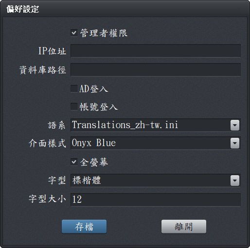

偏好設定
使用者可設定軟體語系、字型、樣式及系統相關參數，使介面及操作符合個人需求。
-
建議環境：
- Windows 顯示縮放：100%
- 顯示器解析度：1920×1080
- 主視窗中央分隔線可調整左右比例
- 設定檔位置：
InfoRec/InfoRec.conf 內含詳細設定與說明。
-
系統設定：
- 管理者權限：單機或網路版管理者預設權限
- IP 位址：網路版使用
- 資料庫設定：網路版使用
- AD 登入：需搭配 AD 網域
- 帳號登入：啟用密碼控管（預設帳號
ADMIN／密碼 admin）
- 語系：支援繁中、簡中、英，可擴充
- 介面樣式：標準或暗色系 (Onyx Blue)
- 全螢幕：建議 1366×768（筆電）或 1920×1080
- 字型與大小：依需求自行調整，建議 12–14
-
字型縮放參考：
- 若 Windows「縮放」為 100%，字型 12 或 14 效果最佳
- 若 Windows「縮放」為 125%，字型應調整更大，例如 16 以上
-
備註：
- 主視窗會依文件特性自動調整左右視窗寬度，也可手動拖曳分隔線

偏好設定視窗